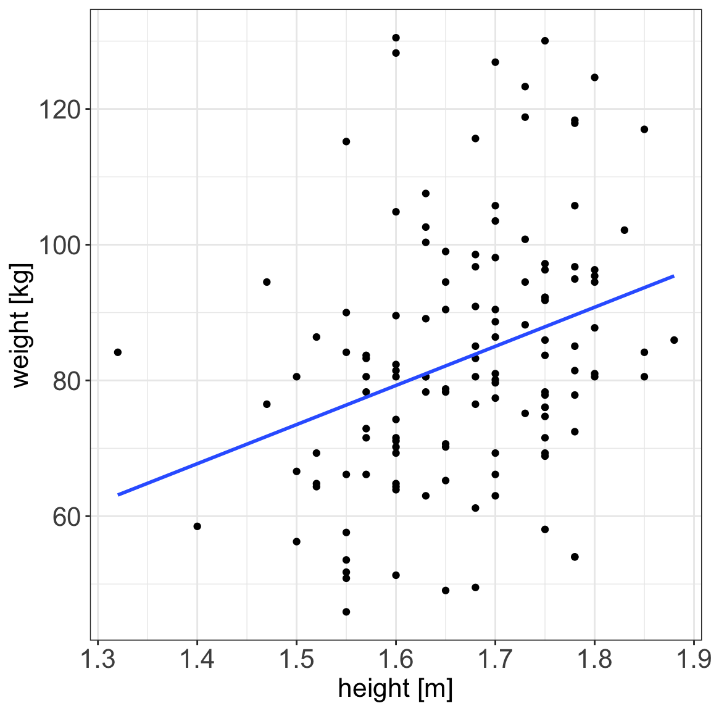
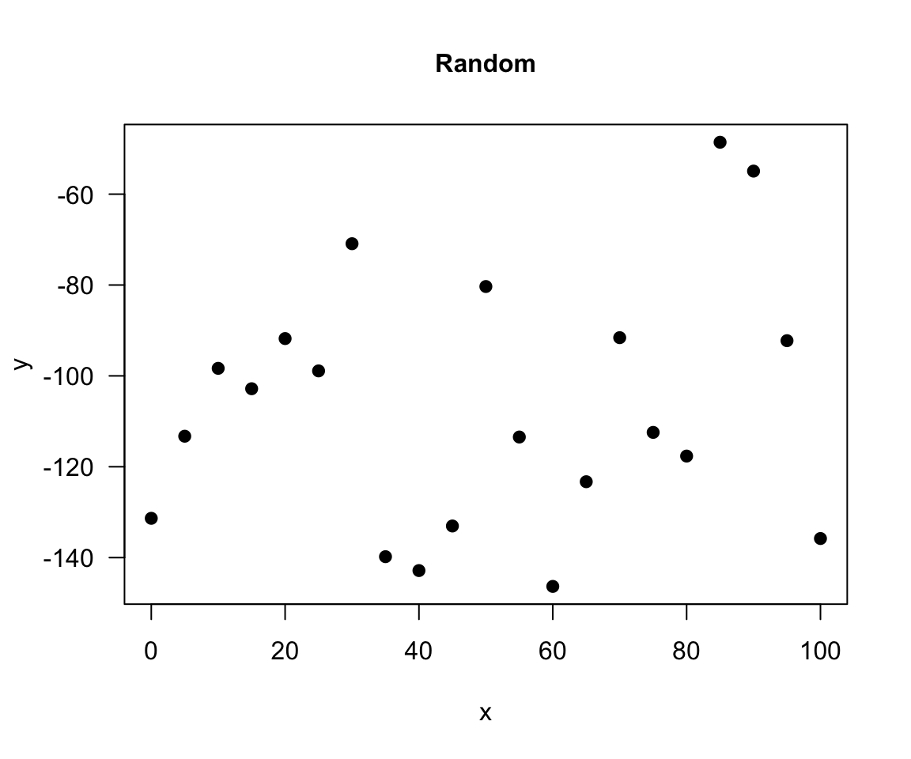
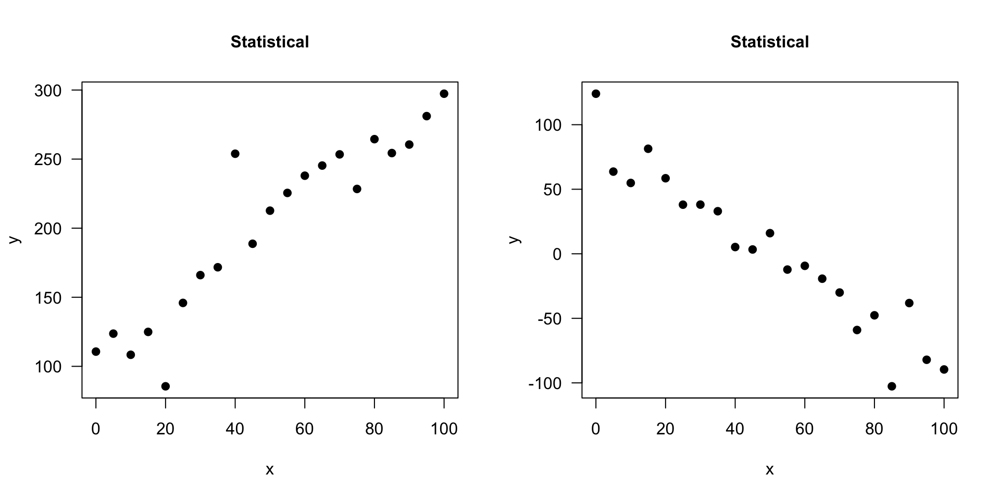

Introduction to linear models
We will learn
before lunch
- what are linear models
- how to estimate model parameters
- hypothesis testing on linear regression
- evaluating how well model fits the data
- model assumptions
after lunch
- linear model selection and regularization
- GLM with logistic regression
Why linear models?
With linear models we can answer questions such as:
- is there a relationship between exposure and outcome, e.g. height and weight?
- how strong is the relationship between the two variables?
- what will be a predicted value of the outcome given a new set of exposure values?
- which variables are associated with the response, e.g. is it height that dictates the weight or height and age?
Statistical vs. deterministic relationship
Relationships in probability and statistics can generally be one of three things:
- deterministic
- random
- statistical
Statistical vs. deterministic relationship
deterministic
A deterministic relationship involves an exact relationship between two variables, for instance Fahrenheit and Celsius degrees is defined by an equation \(Fahrenheit=\frac{9}{5}\cdot Celcius+32\)
Statistical vs. deterministic relationship
random
There is no relationship between variables in the random relationship, e.g. number of plants Olga buys and time of the year as Olga buys plants whenever she feels like it throughout the entire year
Statistical vs. deterministic relationship
statistical relationship = deterministic + random
A statistical relationship is a mixture of deterministic and random relationship, e.g. the savings that Olga has left in the bank account depend on Olga’s monthly salary income (deterministic part) and the money spent on buying plants (random part)
What linear models are
definition
- In an linear model we model the relationship between a single continuous variable \(Y\) and one or more variables \(X\).
- One very general form for the model would be: \[Y = f(X_1, X_2, \dots X_p) + \epsilon\] where \(f\) is some unknown function and \(\epsilon\) is the error in this representation.
- The \(X\) variables can be numerical, categorical or a mixture of both.

What linear models are
definition
- Formally, linear models are a way of describing a response variable in terms of linear combination of predictor variables.
- Linear models can become quite advanced by including many variables, e.g. the calories burnt could be a function of the kilometers cycled, road incline and status of a bike, or the transformation of the variables, e.g. a function of kilometers cycled squared
Simple linear regression
- It is used to check the association between the numerical outcome and one numerical explanatory variable
- In practice, we are finding the best-fitting straight line to describe the relationship between the outcome and exposure
Simple linear regression
Example 1 (Weight and plasma volume) Let’s look at the example data containing body weight (kg) and plasma volume (liters) for eight healthy men to see what the best-fitting straight line is.
Simple linear regression
Simple linear regression
Figure 1: Scatter plot of the data shows that high plasma volume tends to be associated with high weight and vice verca. Linear regression gives the equation of the straight line (red) that best describes how the outcome changes (increase or decreases) with a change of exposure variable
The equation for the red line is: \[Y_i=0.086 + 0.044 \cdot x_i \quad for \;i = 1 \dots 8\]
and in general: \[Y_i=\alpha + \beta \cdot x_i \quad for \; i = 1 \dots n \qquad(1)\]
Simple linear regression
In other words, by finding the best-fitting straight line we are building a statistical model to represent the relationship between plasma volume (\(Y\)) and explanatory body weight variable (\(x\))
Simple linear regression
weight <- c(58, 70, 74, 63.5, 62.0, 70.5, 71.0, 66.0) # body weight (kg)
plasma <- c(2.75, 2.86, 3.37, 2.76, 2.62, 3.49, 3.05, 3.12) # plasma volume (liters)- If we were to use our model \(Y_i=0.086 + 0.044 \cdot x_i\) to find plasma volume given a weight of 58 kg (our first observation, \(i=1\))
- we would notice that we would get \(Y=0.086 + 0.044 \cdot 58 = 2.638\)
- \(2.638\) is not exactly the as same as \(2.75\), the first measurement we have in our dataset, i.e. \(2.75 - 2.638 = 0.112 \neq 0\).
- We thus add to the previous equation (Equation 1) an error term to account for this and now we can write our simple regression model more formally as:
- \[Y_i = \alpha + \beta \cdot x_i + \epsilon_i \qquad(2)\] where:
- \(x\): is called: exposure variable, explanatory variable, dependent variable, predictor, covariate
- \(y\): is called: response, outcome, dependent variable
- \(\alpha\) and \(\beta\) are model coefficients
- and \(\epsilon_i\) is an error terms

Least squares
- in the above “body weight - plasma volume” example, the values of \(\alpha\) and \(\beta\) have just appeared
- in practice, \(\alpha\) and \(\beta\) values are unknown and we use data to estimate these coefficients, noting the estimates with a hat, \(\hat{\alpha}\) and \(\hat{\beta}\)
- least squares is one of the methods of parameters estimation, i.e. finding \(\hat{\alpha}\) and \(\hat{\beta}\)
Least squares
minimizing RSS
Let \(\hat{y_i}=\hat{\alpha} + \hat{\beta}x_i\) be the prediction \(y_i\) based on the \(i\)-th value of \(x\):
- Then \(\epsilon_i = y_i - \hat{y_i}\) represents the \(i\)-th residual, i.e. the difference between the \(i\)-th observed response value and the \(i\)-th response value that is predicted by the linear model
- RSS, the residual sum of squares is defined as: \[RSS = \epsilon_1^2 + \epsilon_2^2 + \dots + \epsilon_n^2\] or equivalently as: \[RSS=(y_1-\hat{\alpha}-\hat{\beta}x_1)^2+(y_2-\hat{\alpha}-\hat{\beta}x_2)^2+...+(y_n-\hat{\alpha}-\hat{\beta}x_n)^2\]
- the least squares approach chooses \(\hat{\alpha}\) and \(\hat{\beta}\) to minimize the RSS.
Slope
\(plasma = 0.0857 + 0.0436 * weight\)
Linear regression gives us estimates of model coefficient \(Y_i = \alpha + \beta x_i + \epsilon_i\)
Increasing weight by 5 kg corresponds to \(3.14 - 2.92 = 0.22\) increase in plasma volume. Increasing weight by 1 kg corresponds \(2.96 - 2.92 = 0.04\) increase in plasma volume
Intercept
\(plasma = 0.0857 + 0.0436 * weight\)
Linear regression gives us estimates of model coefficient \(Y_i = \alpha + \beta x_i + \epsilon_i\)
Intercept value corresponds to expected outcome when the explanatory variable value equals to zero. It is not always meaningful
Hypothesis testing
Is there a relationship between the response and the predictor?
- the calculated \(\hat{\alpha}\) and \(\hat{\beta}\) are estimates of the population values of the intercept and slope and are therefore subject to sampling variation
- their precision is measured by their estimated standard errors,
e.s.e(\(\hat{\alpha}\)) ande.s.e(\(\hat{\beta}\)) - these estimated standard errors are used in hypothesis testing
Hypothesis testing
The most common hypothesis test involves testing the null hypothesis of:
- \(H_0:\) There is no relationship between \(X\) and \(Y\)
- versus the
alternative hypothesis\(H_a:\) there is some relationship between \(X\) and \(Y\)
Mathematically, this corresponds to testing:
- \(H_0: \beta=0\)
- versus \(H_a: \beta\neq0\)
- since if \(\beta=0\) then the model \(Y_i=\alpha+\beta x_i + \epsilon_i\) reduces to \(Y=\alpha + \epsilon_i\)
Under the null hypothesis \(H_0: \beta = 0\) 
- \(n\) is number of observations
- \(p\) is number of model parameters
- \(\frac{\hat{\beta}-\beta}{e.s.e(\hat{\beta})}\) is the ratio of the departure of the estimated value of a parameter, \(\hat\beta\), from its hypothesized value, \(\beta\), to its standard error, called
t-statistics - the
t-statisticsfollows Student’s t distribution with \(n-p\) degrees of freedom
Hypothesis testing
Example 2 (Hypothesis testing) Let’s look again at our example data and linear model fitted in R with lm() function.
Call:
lm(formula = plasma ~ weight)
Residuals:
Min 1Q Median 3Q Max
-0.27880 -0.14178 -0.01928 0.13986 0.32939
Coefficients:
Estimate Std. Error t value Pr(>|t|)
(Intercept) 0.08572 1.02400 0.084 0.9360
weight 0.04362 0.01527 2.857 0.0289 *
---
Signif. codes: 0 '***' 0.001 '**' 0.01 '*' 0.05 '.' 0.1 ' ' 1
Residual standard error: 0.2188 on 6 degrees of freedom
Multiple R-squared: 0.5763, Adjusted R-squared: 0.5057
F-statistic: 8.16 on 1 and 6 DF, p-value: 0.02893- Under
Estimatewe see estimates of our model coefficients, \(\hat{\alpha}\) (intercept) and \(\hat{\beta}\) (slope, here weight), followed by their estimated standard errors,Std. Errors
- If we were to test if there is an association between weight and plasma volume we would write under the null hypothesis \(H_0: \beta = 0\) \[\frac{\hat{\beta}-\beta}{e.s.e(\hat{\beta})} = \frac{0.04362-0}{0.01527} = 2.856582\]
- and we would compare
t-statisticstoStudent's t distributionwith \(n-p = 8 - 2 = 6\) degrees of freedom (as we have 8 observations and two model parameters, \(\alpha\) and \(\beta\))
- we can use Student’s t distribution table or R code to obtain the associated P-value
[1] 0.02893095- here the observed t-statistics is large and therefore yields a small P-value, meaning that there is sufficient evidence to reject null hypothesis in favor of the alternative and conclude that there is a significant association between weight and plasma volume
Vector-matrix notations
Let’s rewrite our simple linear regression model \(Y_i = \alpha + \beta_i + \epsilon_i \quad i=1,\dots n\) into vector-matrix notation in 6 steps.
Step 1. We rename our \(\alpha\) to \(\beta_0\) and \(\beta\) to \(\beta_1\).
Step 2. We notice that we have \(n\) equations such as:
\[y_1 = \beta_0 + \beta_1 x_1 + \epsilon_1\] \[y_2 = \beta_0 + \beta_1 x_2 + \epsilon_2\] \[y_3 = \beta_0 + \beta_1 x_3 + \epsilon_3\] \[\dots\] \[y_n = \beta_0 + \beta_1 x_n + \epsilon_n\]
Step 3. We group all \(Y_i\) and \(\epsilon_i\) into column vectors: \(\mathbf{Y}=\begin{bmatrix} y_1 \\ y_2 \\ \vdots \\ y_{n} \end{bmatrix}\) and \(\boldsymbol\epsilon=\begin{bmatrix} \epsilon_1 \\ \epsilon_2 \\ \vdots \\ \epsilon_{n} \end{bmatrix}\)
Step 4. We stack two parameters \(\beta_0\) and \(\beta_1\) into another column vector:\[\boldsymbol\beta=\begin{bmatrix} \beta_0 \\ \beta_1 \end{bmatrix}\]
Step 5. We append a vector of ones with the single predictor for each \(i\) and create a matrix with two columns called design matrix \[\mathbf{X}=\begin{bmatrix} 1 & x_1 \\ 1 & x_2 \\ \vdots & \vdots \\ 1 & x_{n} \end{bmatrix}\]
Step 6. We write our linear model in a vector-matrix notations as: \[\mathbf{Y} = \mathbf{X}\boldsymbol\beta + \boldsymbol\epsilon\]
Vector-matrix notations
Definition 1 (vector matrix form of the linear model) The vector-matrix representation of a linear model with \(p-1\) predictors can be written as \[\mathbf{Y} = \mathbf{X}\boldsymbol\beta + \boldsymbol\epsilon\]
where:
- \(\mathbf{Y}\) is \(n \times1\) vector of observations
- \(\mathbf{X}\) is \(n \times p\) design matrix
- \(\boldsymbol\beta\) is \(p \times1\) vector of parameters
- \(\boldsymbol\epsilon\) is \(n \times1\) vector of vector of random errors, indepedent and identically distributed (i.i.d) N(0, \(\sigma^2\))
In full, the above vectors and matrix have the form:
\(\mathbf{Y}=\begin{bmatrix} y_1 \\ y_2 \\ \vdots \\ y_{n} \end{bmatrix}\) \(\boldsymbol\beta=\begin{bmatrix} \beta_0 \\ \beta_1 \\ \vdots \\ \beta_{p} \end{bmatrix}\) \(\boldsymbol\epsilon=\begin{bmatrix} \epsilon_1 \\ \epsilon_2 \\ \vdots \\ \epsilon_{n} \end{bmatrix}\) \(\mathbf{X}=\begin{bmatrix} 1 & x_{1,1} & \dots & x_{1,p-1} \\ 1 & x_{2,1} & \dots & x_{2,p-1} \\ \vdots & \vdots & \vdots & \vdots \\ 1 & x_{n,1} & \dots & x_{n,p-1} \end{bmatrix}\)
Vector-matrix notations
Theorem 1 (Least squares in vector-matrix notation) The least squares estimates for a linear regression of the form: \[\mathbf{Y} = \mathbf{X}\boldsymbol\beta + \boldsymbol\epsilon\]
is given by: \[\hat{\mathbf{\beta}}= (\mathbf{X}^T\mathbf{X})^{-1}\mathbf{X}^T\mathbf{Y}\]
Vector-matrix notations
Example 3 (vector-matrix-notation) Following the above definition we can write the “weight - plasma volume model” as: \[\mathbf{Y} = \mathbf{X}\boldsymbol\beta + \boldsymbol\epsilon\] where:
\(\mathbf{Y}=\begin{bmatrix} 2.75 \\ 2.86 \\ 3.37 \\ 2.76 \\ 2.62 \\ 3.49 \\ 3.05 \\ 3.12 \end{bmatrix}\)
\(\boldsymbol\beta=\begin{bmatrix} \beta_0 \\ \beta_1 \end{bmatrix}\) \(\boldsymbol\epsilon=\begin{bmatrix} \epsilon_1 \\ \epsilon_2 \\ \vdots \\ \epsilon_{8} \end{bmatrix}\) \(\mathbf{X}=\begin{bmatrix} 1 & 58.0 \\ 1 & 70.0 \\ 1 & 74.0 \\ 1 & 63.5 \\ 1 & 62.0 \\ 1 & 70.5 \\ 1 & 71.0 \\ 1 & 66.0 \\ \end{bmatrix}\)
and we can estimate model parameters using \(\hat{\mathbf{\beta}}= (\mathbf{X}^T\mathbf{X})^{-1}\mathbf{X}^T\mathbf{Y}\).
Vector-matrix notations: least squares
Live demo
Estimating model parameters using \(\hat{\mathbf{\beta}}= (\mathbf{X}^T\mathbf{X})^{-1}\mathbf{X}^T\mathbf{Y}\).
n <- length(plasma) # no. of observation
Y <- as.matrix(plasma, ncol=1)
X <- cbind(rep(1, length=n), weight)
X <- as.matrix(X)
# print Y and X to double-check that the format is according to the definition
print(Y)
print(X)
# least squares estimate
# solve() finds inverse of matrix
beta.hat <- solve(t(X)%*%X)%*%t(X)%*%Y
print(beta.hat) [,1]
0.08572428
weight 0.04361534Vector-matrix notations: least squares
Live demo
In R we can use lm(), the built-in function, to fit a linear regression model and we can replace the above code with one line
Call:
lm(formula = plasma ~ weight)
Coefficients:
(Intercept) weight
0.08572 0.04362 Assessing model fit
\(R^2\): summary of the fitted model
TSS


\(R^2\): summary of the fitted model
RSS
\(R^2\): summary of the fitted model

TSS, denoted Total corrected sum-of-squares is the residual sum-of-squares for Model 0 \[S(\hat{\beta_0}) = TSS = \sum_{i=1}^{n}(y_i - \bar{y})^2 = S_{yy}\] corresponding the to the sum of squared distances to the purple line
RSS, the residual sum-of-squares, is defined as: \[RSS = \displaystyle \sum_{i=1}^{n}(y_i - \{\hat{\beta_0} + \hat{\beta}_1x_{1i} + \dots + \hat{\beta}_px_{pi}\}) = \sum_{i=1}^{n}(y_i - \hat{y_i})^2\] and corresponds to the squared distances between the observed values \(y_i, \dots,y_n\) to fitted values \(\hat{y_1}, \dots \hat{y_n}\), i.e. distances to the red fitted line
\(R^2\): summary of the fitted model
Definition 2 (\(R^2\)) A simple but useful measure of model fit is given by \[R^2 = 1 - \frac{RSS}{TSS}\] where:
- RSS is the residual sum-of-squares for Model 1, the fitted model of interest
- TSS is the sum of squares of the null model
- \(R^2\) is also referred as coefficient of determination
- \(R^2\) is expressed on a scale, as a proportion between 0 and 1 of the total variation in the data.
\(R^2\) and correlation coefficient
Theorem 2 (\(R^2\)) In the case of simple linear regression:
Model 1: \(Y_i = \beta_0 + \beta_1x + \epsilon_i\) \[R^2 = r^2\] where:
- \(R^2\) is the coefficient of determination
- \(r^2\) is the sample correlation coefficient
\(R^2(adj)\)
- In the case of multiple linear regression we are using the adjusted version of \(R^2\) to assess the model fit as the number of explanatory variables increase, \(R^2\) also increases.
Theorem 3 (\(R^2(adj)\)) For any multiple linear regression \[Y_i = \beta_0 + \beta_1x_{1i} + \dots + \beta_{p-1}x_{(p-1)i} + \epsilon_i\] \(R^2(adj)\) is defined as \[R^2(adj) = 1-\frac{\frac{RSS}{n-p-1}}{\frac{TSS}{n-1}}\]
- \(p\) is the number of independent predictors, i.e. the number of variables in the model, excluding the constant and \(n\) is number of observations.
\(R^2(adj)\) can also be calculated from \(R^2\): \[R^2(adj) = 1 - (1-R^2)\frac{n-1}{n-p-1}\]
Checking model assumptions
The assumptions of a linear model
- Before making use of a fitted model for explanation or prediction, it is wise to check that the model provides an adequate description of the data.
- Informally we have been using box plots and scatter plots to look at the data.
- There are however formal assumptions that should be met when fitting linear models.
The assumptions of a linear model
Linearity:
- The relationship between \(X\) and \(Y\) is linear
Independence of errors
- \(Y\) is independent of errors, there is no relationship between the residuals and \(Y\)
Normality of errors
- The residuals must be approximately normally distributed
Equal variances
- The variance of the residuals is the same for all values of \(X\)
Checking assumptions
Residuals, \(\hat{\epsilon_i} = y_i - \hat{y_i}\) are the main ingredient to check model assumptions.
Checking assumptions
Residuals, \(\hat{\epsilon_i} = y_i - \hat{y_i}\) are the main ingredient to check model assumptions.

Diagnostic residual plots based on the lm() model used to assess whether the assumptions of linear models are met. Modeling glucose with age. Model assumptions seems to be violated, e.g. with residulas not following normal distributions.
Exercises
Let’s practice in exercises fitting linear models, hypothesis testing and assessing model fit.
Linear models: regression and classification tasks
Linear models in ML context
- We can think of linear models in machine learning context, as they are both used for regression and classification.
- Often some or many of the variables used in linear models are not associated with the response.
- There are feature selection methods for excluding irrelevant variables and improving prediction results.
- subset selection, Shrinkage methods and dimension reduction
- or grouped by filter methods, wrapper methods and embedded methods.
Evaluating linear models
Regression models can be evaluated by assessing a model fit or by directly evaluating the prediction error via using data splitting strategies.
Model fit
Adjusted R-squared \[R_{adj}^2=1-\frac{RSS}{TSS}\frac{n-1}{n-p-1}\]
Akaike information criterion (AIC) \[\text{AIC} = n \ln(\text{RSS}/n) + 2p\]
Bayesian information criterion (BIC) \[\text{BIC} = n \ln(\text{RSS}/n) + p \ln(n)\]
Prediction error
Mean Squared Error (MSE) \[MSE = \frac{1}{N}\sum_{i=1}^{N}({y_i}-\hat{y}_i)^2\] Root Mean Squared Error (RMSE) \[RMSE = \sqrt{\frac{1}{N}\sum_{i=1}^{N}({y_i}-\hat{y}_i)^2}\]
Mean Absolute Error (MAE) \[MAE = \frac{1}{N}\sum_{i=1}^{N}|{y_i}-\hat{y}_i|\]
Feature selection
Group discussion
It is time to try to find the best model to explain BMI using diabetes data. Given from what we have learnt so far about linear regression models, how would you find the best model?
As a reminder, we have below variables in the data:
[1] "id" "chol" "stab.glu" "hdl" "ratio" "glyhb"
[7] "location" "age" "gender" "height" "weight" "frame"
[13] "bp.1s" "bp.1d" "bp.2s" "bp.2d" "waist" "hip"
[19] "time.ppn" "BMI" "obese" "diabetic"Feature selection
Definition
Feature selection is the process of selecting the most relevant and informative subset of features from a larger set of potential features in order to improve the performance and interpretability of a machine learning model.
There are generally three main groups of feature selection methods:
- Filter methods use statistical measures to score the features and select the most relevant ones, e.g. based on correlation coefficient. Computationally efficient but may overlook complex interactions between features.
- Wrapper methods use ML algorithm to evaluate the performance of different subsets of features, e.g. forward/backward feature selection. Computationally heavy.
- Embedded methods incorporate feature selection as part of the ML algorithm itself, e.g. regularized regression or Random Forest. These methods are computationally efficient and can be more accurate than filter methods.
Regularized regression
definition
- Regularized regression expands on the regression by adding a penalty term(s) to shrink the model coefficients of less important features towards zero.
- This can help to prevent overfitting and improve the accuracy of the predictive model.
- Depending on the penalty added, we talk about Ridge, Lasso or Elastic Nets regression.
Regularized regression
Ridge regression
- Previously we saw that the least squares fitting procedure estimates model coefficients \(\beta_0, \beta_1, \cdots, \beta_p\) using the values that minimize the residual sum of squares: \[RSS = \sum_{i=1}^{n} \left( y_i - \beta_0 - \sum_{j=1}^{p}\beta_jx_{ij} \right)^2 \qquad(3)\]
- In regularized regression the coefficients are estimated by minimizing slightly different quantity. Specifically, in Ridge regression we estimate \(\hat\beta^{L}\) that minimizes \[\sum_{i=1}^{n} \left( y_i - \beta_0 - \sum_{j=1}^{p}\beta_jx_{ij} \right)^2 + \lambda \sum_{j=1}^{p}\beta_j^2 = RSS + \lambda \sum_{j=1}^{p}\beta_j^2 \qquad(4)\]
where:
\(\lambda \ge 0\) is a tuning parameter to be determined separately e.g. via cross-validation
Regularized regression
Ridge regression
\[\sum_{i=1}^{n} \left( y_i - \beta_0 - \sum_{j=1}^{p}\beta_jx_{ij} \right)^2 + \lambda \sum_{j=1}^{p}\beta_j^2 = RSS + \lambda \sum_{j=1}^{p}\beta_j^2 \qquad(5)\]
Equation 5 trades two different criteria:
- lasso regression seeks coefficient estimates that fit the data well, by making RSS small
- however, the second term \(\lambda \sum_{j=1}^{p}\beta_j^2\), called shrinkage penalty is small when \(\beta_1, \cdots, \beta_p\) are close to zero, so it has the effect of shrinking the estimates of \(\beta_j\) towards zero.
- the tuning parameter \(\lambda\) controls the relative impact of these two terms on the regression coefficient estimates
- when \(\lambda = 0\), the penalty term has no effect
- as \(\lambda \rightarrow \infty\) the impact of the shrinkage penalty grows and the ridge regression coefficient estimates approach zero
Regularized regression
Ridge regression

Example of Ridge regression to model BMI using age, chol, hdl and glucose variables: model coefficients are plotted over a range of lambda values, showing how initially for small lambda values all variables are part of the model and how they gradually shrink towards zero for larger lambda values.
Bias-variance trade-off
Ridge regression’s advantages over least squares estimates stems from bias-variance trade-off
- The bias-variance trade-off describes the relationship between model complexity, prediction accuracy, and the ability of the model to generalize to new data.
- Bias refers to the error that is introduced by approximating a real-life problem with a simplified model
- e.g. a high bias model is one that makes overly simplistic assumptions about the underlying data, resulting in under-fitting and poor accuracy.
- Variance refers to the sensitivity of a model to fluctuations in the training data.
- e.g. a high variance model is one that is overly complex and captures noise in the training data, resulting in overfitting and poor generalization to new data.
Bias-variance trade-off
The goal of machine learning is to find a model with the right balance between bias and variance.
- The bias-variance trade-off can be visualized in terms of MSE, means squared error of the model. The MSE can be decomposed into: \[MSE(\hat\beta) := bias^2(\hat\beta) + Var(\hat\beta) + noise\]
- The irreducible error is the inherent noise in the data that cannot be reduced by any model
- The bias and variance terms can be reduced by choosing an appropriate model complexity.
- The trade-off lies in finding the right balance between bias and variance that minimizes the total MSE.
- In practice, this trade-off can be addressed by regularizing the model, selecting an appropriate model complexity, or by using ensemble methods that combine multiple models to reduce the variance.
Bias-variance trade-off

Figure 3: Squared bias, variance and test mean squared error for ridge regression predictions on a simulated data as a function of lambda demonstrating bias-variance trade-off. Based on Gareth James et. al, A Introduction to statistical learning
Ridge vs. Lasso
In Ridge regression we minimize: \[\sum_{i=1}^{n} \left( y_i - \beta_0 - \sum_{j=1}^{p}\beta_jx_{ij} \right)^2 + \lambda \sum_{j=1}^{p}\beta_j^2 = RSS + \lambda \sum_{j=1}^{p}\beta_j^2 \qquad(6)\] where \(\lambda \sum_{j=1}^{p}\beta_j^2\) is also known as L2 regularization element or \(l_2\) penalty
In Lasso regression, that is Least Absolute Shrinkage and Selection Operator regression we change penalty term to absolute value of the regression coefficients: \[\sum_{i=1}^{n} \left( y_i - \beta_0 - \sum_{j=1}^{p}\beta_jx_{ij} \right)^2 + \lambda \sum_{j=1}^{p}|\beta_j| = RSS + \lambda \sum_{j=1}^{p}|\beta_j| \qquad(7)\] where \(\lambda \sum_{j=1}^{p}|\beta_j|\) is also known as L1 regularization element or \(l_1\) penalty
Lasso regression was introduced to help model interpretation. With Ridge regression we improve model performance but unless \(\lambda = \infty\) all beta coefficients are non-zero, hence all variables remain in the model. By using \(l_1\) penalty we can force some of the coefficients estimates to be exactly equal to 0, hence perform variable selection
Ridge vs. Lasso
Elastic Net
Elastic Net use both L1 and L2 penalties to try to find middle grounds by performing parameter shrinkage and variable selection. \[\sum_{i=1}^{n} \left( y_i - \beta_0 - \sum_{j=1}^{p}\beta_jx_{ij} \right)^2 + \lambda \sum_{j=1}^{p}|\beta_j| + \lambda \sum_{j=1}^{p}\beta_j^2 = RSS + \lambda \sum_{j=1}^{p}|\beta_j| + \lambda \sum_{j=1}^{p}\beta_j^2 \qquad(8)\]

Example of Elastic Net regression to model BMI using age, chol, hdl and glucose variables: model coefficients are plotted over a range of lambda values and alpha value 0.1, showing the changes of model coefficients as a function of lambda being somewhere between those for Ridge and Lasso regression.
Elastic Net
In R with glmnet
In the glmnet library we can fit Elastic Net by setting parameters \(\alpha\). Under the hood glmnet minimizes a cost function: \[\sum_{i_=1}^{n}(y_i-\hat y_i)^2 + \lambda \left ( (1-\alpha) \sum_{j=1}^{p}\beta_j^2 + \alpha \sum_{j=1}^{p}|\beta_j|\right )\] where:
- \(n\) is the number of samples
- \(p\) is the number of parameters
- \(\lambda\), \(\alpha\) hyperparameters control the shrinkage
When \(\alpha = 0\) this corresponds to Ridge regression and when \(\alpha=1\) this corresponds to Lasso regression. A value of \(0 < \alpha < 1\) gives us Elastic Net regularization, combining both L1 and L2 regularization terms.
Generalized Linear Models
Why Generalized Linear Models
GLM
- GLMs extend linear model framework to outcome variables that do not follow normal distribution.
- They are most frequently used to model binary, categorical or count data.
- For instance, fitting a regression line to binary data yields predicted values that could take any value, including \(<0\),
- not to mention that it is hard to argue that the values of 0 and 1s are normally distributed.
Logistic regression
- Since the response variable takes only two values (Yes/No) we use GLM model
- to fit logistic regression model for the probability of suffering from obesity (Yes).
- We let \(p_i=P(Y_i=1)\) denote the probability of suffering from obesity (success)
- and we assume that the response follows binomial distribution: \(Y_i \sim Bi(1, p_i)\) distribution.
- We can then write the regression model now as: \[log(\frac{p_i}{1-p_i})=\beta_0 + \beta_1x_i\] and given the properties of logarithms this is also equivalent to: \[p_i = \frac{exp(\beta_0 + \beta_1x_i)}{1 + exp(\beta_0 + \beta_1x_i)}\]
Logistic regression
- In essence, the GLM generalizes linear regression by allowing the linear model to be related to the response variable via a link function.
- Here, the link function \(log(\frac{p_i}{1-p_i})\) provides the link between the binomial distribution of \(Y_i\) (suffering from obesity) and the linear predictor (waist)
- Thus the GLM model can be written as \[g(\mu_i)=\mathbf{X}\boldsymbol\beta\] where
g()is the link function.
Logistic regression
R
In R we can use glm() function to fit GLM models:
# fit logistic regression model
logmodel_1 <- glm(obese ~ waist, family = binomial(link="logit"), data = data_diabetes)
# print model summary
print(summary(logmodel_1))##
## Call:
## glm(formula = obese ~ waist, family = binomial(link = "logit"),
## data = data_diabetes)
##
## Coefficients:
## Estimate Std. Error z value Pr(>|z|)
## (Intercept) -18.29349 1.83541 -9.967 <2e-16 ***
## waist 0.18013 0.01843 9.774 <2e-16 ***
## ---
## Signif. codes: 0 '***' 0.001 '**' 0.01 '*' 0.05 '.' 0.1 ' ' 1
##
## (Dispersion parameter for binomial family taken to be 1)
##
## Null deviance: 518.24 on 394 degrees of freedom
## Residual deviance: 282.93 on 393 degrees of freedom
## (8 observations deleted due to missingness)
## AIC: 286.93
##
## Number of Fisher Scoring iterations: 6Logistic regression
R
Fitted logistic model to diabetes data given the 130 study participants and using waist as explantatory variable to model obesity status.
Logistic regression
Hypothesis testing
- Similarly to linear models, we can determine whether each variable is related to the outcome of interest by testing the null hypothesis that the relevant logistic regression coefficient is zero.
- This can be performed by Wald test which is equals to estimated logistic regression coefficient divided by its standard error and follows the Standard Normal distribution: \[W = \frac{\hat\beta-\beta}{e.s.e.(\hat\beta)} \sim N(0,1)\]
# fit logistic regression model
logmodel_1 <- glm(obese ~ waist, family = binomial(link="logit"), data = data_diabetes)
summary(logmodel_1)
Call:
glm(formula = obese ~ waist, family = binomial(link = "logit"),
data = data_diabetes)
Coefficients:
Estimate Std. Error z value Pr(>|z|)
(Intercept) -18.29349 1.83541 -9.967 <2e-16 ***
waist 0.18013 0.01843 9.774 <2e-16 ***
---
Signif. codes: 0 '***' 0.001 '**' 0.01 '*' 0.05 '.' 0.1 ' ' 1
(Dispersion parameter for binomial family taken to be 1)
Null deviance: 518.24 on 394 degrees of freedom
Residual deviance: 282.93 on 393 degrees of freedom
(8 observations deleted due to missingness)
AIC: 286.93
Number of Fisher Scoring iterations: 6Logistic regression
Deviance
- Deviance is the number that measures the goodness of fit of a logistic regression model.
- We use saturated and residual deviance to assess model, instead of \(R^2\) or \(R^2(adj)\).
- We can also use deviance to check the association between explanatory variable and the outcome
- In the likelihood ratio test the test statistics is the deviance for the full model minus the deviance for the full model excluding the relevant explanatory variable. This test statistics follow a Chi-squared distribution with 1 degree of freedom.
Logistic regression
Odds ratio
- In logistic regression we often interpret the model coefficients by taking \(e^{\hat{\beta}}\)
- and we talk about odd ratios.
- For instance we can say, given our above model, \(e^{0.18} = 1.2\) that for each unit increase in
waistthe odds of suffering from obesity get multiplied by 1.2.
# fit logistic regression model
logmodel_1 <- glm(obese ~ waist, family = binomial(link="logit"), data = data_diabetes)
# print model summary
print(summary(logmodel_1))
Call:
glm(formula = obese ~ waist, family = binomial(link = "logit"),
data = data_diabetes)
Coefficients:
Estimate Std. Error z value Pr(>|z|)
(Intercept) -18.29349 1.83541 -9.967 <2e-16 ***
waist 0.18013 0.01843 9.774 <2e-16 ***
---
Signif. codes: 0 '***' 0.001 '**' 0.01 '*' 0.05 '.' 0.1 ' ' 1
(Dispersion parameter for binomial family taken to be 1)
Null deviance: 518.24 on 394 degrees of freedom
Residual deviance: 282.93 on 393 degrees of freedom
(8 observations deleted due to missingness)
AIC: 286.93
Number of Fisher Scoring iterations: 6Common GLM models
| Type.of.outcome | Type.of.GLM |
|---|---|
| Continous numerical | Simple or multiple linear |
| Binary | Logistic |
| Categorical outcome with more than two groups | Multinomial or ordinal logistic regression |
| Event rate or count | Poisson |
| Time to event | Exponential |
Logistic Lasso
Logistic Lasso
Logistic regression + Lasso regularization
- Logistic Lasso combines logistic regression with Lasso regularization to analyze binary outcome data while simultaneously performing variable selection and regularization.
- We estimate set of coefficients \(\hat \beta\) that minimize the combined logistic loss function and the Lasso penalty:
\[ \left( \sum_{i=1}^n [y_i \log(p_i) + (1-y_i) \log(1-p_i)] \right) + \lambda \sum_{j=1}^p |\beta_j| \]
where:
- \(y_i\) represents the binary outcome (0 or 1) for the ( i )-th observation.
- \(p_i\) is the predicted probability of \(y_i = 1\) given by the logistic model \(p_i = \frac{1}{1 + e^{-(\beta_0 + \beta_1 x_{i1} + \cdots + \beta_p x_{ip})}}\).
- \(\lambda\) is the regularization parameter that controls the strength of the Lasso penalty \(\lambda \sum_{j=1}^p |\beta_j|\), which encourages sparsity in the coefficients \(\beta_j\) by shrinking some of them to zero.
- \(n\) is the number of observations, and \(p\) is the number of predictors.
Common cases
- Let’s go over common linear models cases and some exercises.